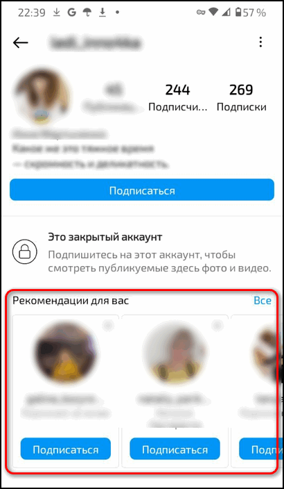
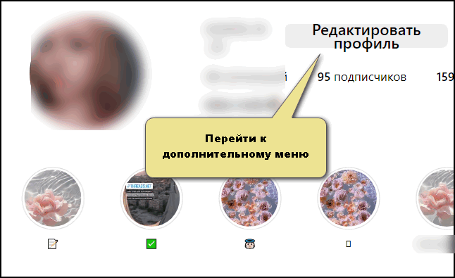
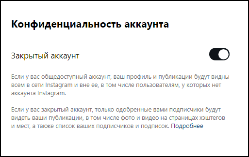
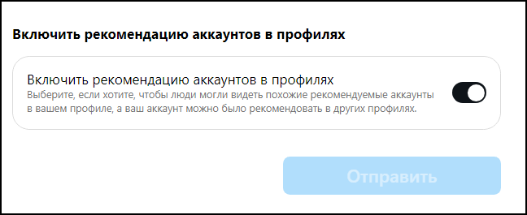
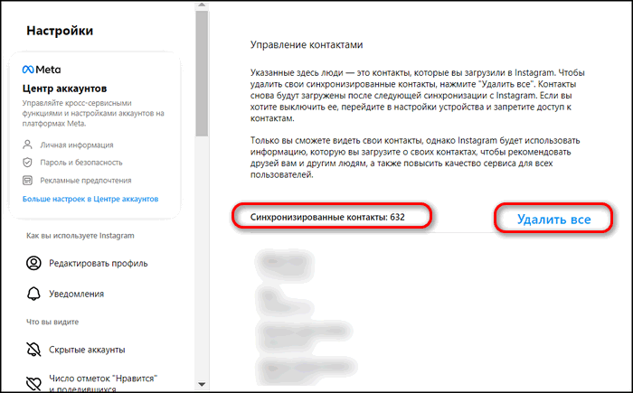
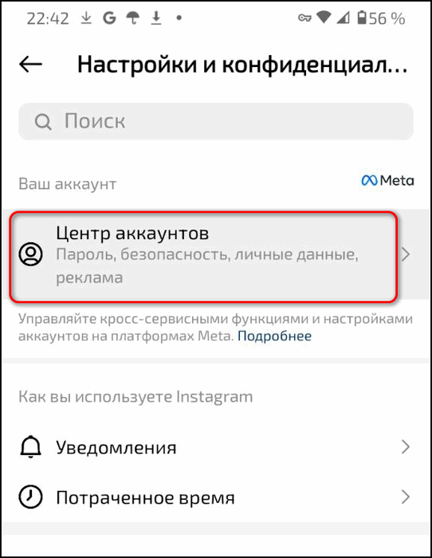
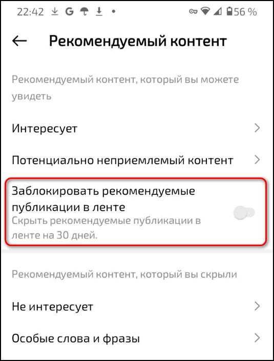
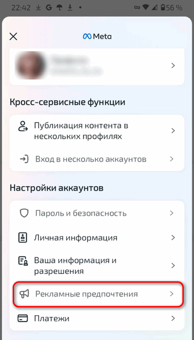
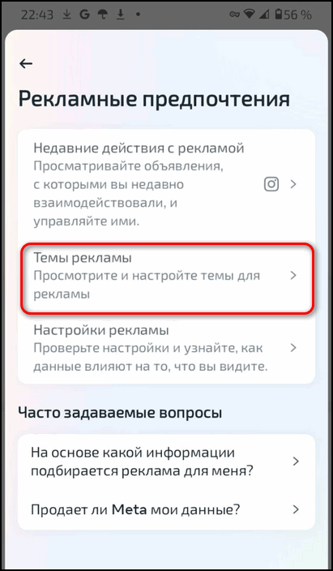
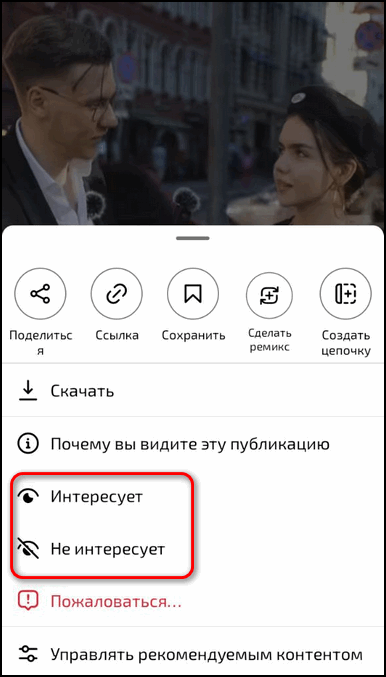

Рекомендации в Инстаграме: полный гайд по настройке и отключению

В Инстаграме* убрать рекомендации можно через параметры учетной записи, а также настроить рекламные предпочтения, рекомендации постов для профиля.
Интересы и рекомендации в Инстаграма*
Социальная сеть регулярно рекомендует пользователю людей, которые есть у него в телефонной книге, с которыми тот взаимодействовал или на них подписаны друзья, знакомые.
Вкладка «Интересные люди» появляется в двух случаях: переходя в список подписок и если смотреть закрытый аккаунт. Рекомендации такого плана могут быть полезными, если нужно найти другого человека, а никнейм неизвестен.
Рекомендации – это лейтмотив Инстаграма*. На базе интересов каждого пользователя составляется его персональная лента, подбираются посты и рекламные записи.

И тем, и другим можно управлять, если найти в параметрах соответствующую функцию и самостоятельно указать предпочтения. Если этого не сделать, социальная сеть соберет данных из разделов:- наиболее просматриваемые видео. Подписки пользователя и то, на чем он дольше всего задерживает внимание: не перелистывает, ставит лайки и комментирует;
- взаимные подписки. Кто в ответ подписывается и какие предпочтения у этих людей;
- рекламные предпочтения в настройках телефона. Разрешение на использование данных сторонними приложениями, включая Инстаграм*;
- персональные данные владельца аккаунта;
- страницы, которые он посещал в Facebook*. Если аккаунт Instagram* синхронизирован с FB*.
Чтобы изменить свои предпочтения в социальной сети нужно постараться: даже на новых страницах могут появляться те же рекомендованные аккаунты, что были на предыдущей.
Убрать профиль из рекомендуемых
Отключить «Интересные люди» в Инстаграме* проще с компьютерной версии, где этот пункт находится в конце списка при редактировании страницы. Свой аккаунт можно выключить из рекомендаций двумя способами:
- с помощью настроек аккаунта;
- сделать закрытым.
Если учетная запись в статусе «Скрытая» - она не будет порекомендована другим пользователям. Более радикальный вариант – вовсе удалить учетную запись, но тогда и доступа к социальной сети не будет. Как скрыть свою страницу:
- Зайти в социальную сеть с мобильной или компьютерной версии.

- Редактировать или три полоски сверху «Настройки» - Конфиденциальность.
- Закрытый аккаунт.

Теперь публикации увидят только взаимные подписчики, а чтобы подписаться посетителям придется отправлять заявку и дожидаться вашего ответа. Относительно рекомендаций: профиль больше не будет показан потенциальным знакомым.
Читайте подробнее о том, как смотреть закрытый профиль в Инстаграм*, комментарии, лайки или фото и видео.
Скрыть рекомендуемых пользователей: интересные люди
Если рекомендации своего аккаунта скрыть удалось, то примерно также можно скрыть других пользователей. И не только потенциальных знакомых, а и оплаченный контент. Убрать вкладку с «Интересные люди»:
- Зайти в Инстаграм* с помощью компьютерной версии.
- Перейти в раздел: «Редактировать» - пролистать список до конца.

- Убрать галочку рядом с «Включить рекомендацию аккаунтов в профилях».
Теперь страницы других пользователей не будут показаны при последующем посещении закрытых аккаунтов.
Запретить поиск аккаунта по номеру телефона
Последнее, что нужно сделать, чтобы совершенно скрыть свой аккаунт и убрать чужие из рекомендаций – очистить синхронизированный список телефонной книги. Попасть в раздел с сохраненными контактами:
- Зайти в раздел с «Настройкой» - Центр управления аккаунтами.

- Ваша информация и разрешения – Управление контактами.
- Удалить все.
Пользователь удаляет все номера, которые ранее были синхронизированы с социальной сетью. Чтобы сделать свой номер недоступным для поиска можно применить такие варианты:
- поменять на другой. Добавить свой второй номер и сделать его основным;
- удалить телефон из личной информации.
Второй вариант возможен лишь в том случае, если к учетной записи прикреплен адрес электронной почты, с помощью которого можно будет восстановить профиль в дальнейшем.
Настроить рекомендации Ленты в Инстаграме*
Отключить рекомендации в Инстаграме* можно лишь на короткий промежуток времени. В настройках учетной записи находится пункт: «Рекомендуемые публикации», где можно убрать посты на 30 суток. Как скрыть рекомендованные записи:
- Зайти в «Настройки» - перейти к пункту: «Что видите вы».

- Рекомендуемый контент – Запретить рекомендовать записи в течение 30 дней.

Дополнительно к этому, чтобы убрать рекомендации из Ленты, пользователь должен распределить контент по категориям: «Интересен» или «Нет».
Дополнительно, чтобы почистить рекомендации, нужно перейти к рекламным предпочтениям. Это те записи, которые пользователю будут предложены блогерами, на основе его предыдущих предпочтений. Узнать свои рекламные интересы:
- Настройки – Центр аккаунтов.

- Рекламные предпочтения – Настроить и посмотреть темы.

- Кнопка: «Посмотреть» - указать темы, в которых заинтересован и сохранить.
Согласно новым данным будут сброшены рекомендации. В том же подразделе можно выбрать темы, которые не приятны для просмотра: «Показывать меньше».
Узнайте, как сделать свои Reels более просматриваемыми в социальных сетях.
Скрыть в Сторис
Рекомендации Сторис – это реклама, которая появляется между переходом с одной Истории в другую. Если пользователь наткнулся на такое предложение, ему следует поступить так:
- Нажать сверху по трем точкам.
- Выбрать пункт: «Не показывать больше».
В остальных случаях, если появляется в списке контент, противоречащий интересам владельца страницы – заблокировать автора таких постов или отписаться.
Настроить интересы в Рилс
Сменить рекомендации в Инстаграме* возможно во вкладке «Reels». Это короткие клипы, которые пользователь видит при переходе в соответствующую категорию или в списке рекомендаций. Записи подбираются на основе подписок, интересов и часто посещаемых аккаунтов, лайков и комментариев. Также, в Инстаграме* работает механизм длительного просмотра: чем дольше пользователь задержался на какой-то записи, тем с большей вероятностью социальная сеть порекомендует похожие посты. Настроить интересы в Рилс несложно:
- В Instagram* перейти к разделу с короткими клипами.
- Нажать в правом меню три точки: «Мне не интересно».

- Подождать, пока обновятся рекомендации.
Социальная сеть будет регулярно спрашивать пользователя: нравится ли ему подобранный контент. При просмотре очередного видео появится снизу: «Оцените публикацию».
Если владелец страницы более не желает получать рекомендации с определенной группы или блога – автора таких записей можно заблокировать.
Как работает «Не интересно»: почему появляются посты
Даже очистив рекомендации в поиске, в подборке «Популярное», пользователь может и дальше получать контент, который его не устраивает и не соответствует интересам. Обычно, такая ситуация возникает, если:
- кто-то из взаимных подписок ставит лайки и активно комментирует такие публикации;
- пользователь задерживает внимание на подобном контенте дольше, чем на том, в котором заинтересован;
- подписан на автора, который размещает подобные публикации.
Чтобы не получать рекомендации с неинтересным контентом, стоит регулярно чистить свой список подписок. А чтобы определить, кто из друзей поставил лайк – перейти к одной из подобных записей и посмотреть в описании «Понравилось @nickname и другим».